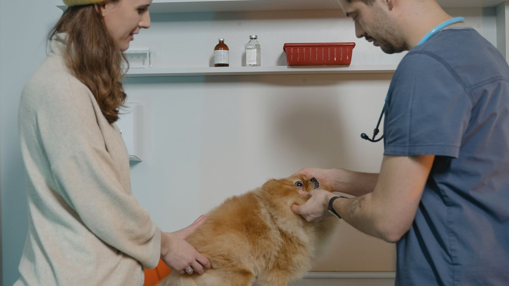

환절기에 달라진 하루
10월 첫 주, 식욕은 그대로인데 낮잠이 20분 늘고 밤에 헥헥거리는 5kg 소형견을 봤습니다. 에어컨 필터를 6주째 안 씻은 집이었고, 필터 교체·환기 10분 후 호흡 패턴이 돌아왔습니다. 병원 전에 집 환경을 먼저 점검한 사례입니다.
계절 변화는 반려동물만의 문제가 아닙니다. 사람이 더 피곤한 환절기일수록 루틴 점검이 필요합니다.
봄·여름
환기를 하루 2회→3회, 각 10분으로 늘리되 직풍은 피합니다. 에어컨 필터(2~4주 1회 세척), 방충망 찢김, 습도 60% 넘으면 제습·건조 주기를 2일로 줄입니다.
산책은 오전 7~9시·저녁 7시 이후로 옮기고, 아스팔트 50℃ 이상 날은 5분 발바닥 테스트(손등 5초) 후 결정합니다.
가을·겨울
히터·난방기 앞 1m 이내 휴식 금지. 습도 40% 이하면 물그릇 2곳+가습(50% 목표). 정전기 많은 11~2월은 빗질 주 1회 추가합니다.
침구를 여름 매트→겨울 3cm 패드로 교체하고, 산책 후 발 닦기를 2분→3분으로 늘립니다.
현장에서
계절 점검은 '봄·여름·가을·겨울 각 1회'보다, 날씨가 바뀌는 전후 2주에 10분씩 보는 방식이 현실적입니다. 에어컨·난방·제습기를 켜기 전후가 사고가 많은 시점입니다.
봄에는 털갈이·꽃가루·환기 창문 그릴 청소를 우선합니다. 재채기·눈물이 늘면 실내 공기질과 함께 기록하세요.
여름에는 바닥 뜨거움, 발코니 문 잠금, 급수량, 그늘 휴식 공간을 확인합니다. 에어컨 바람이 직접 닿는 휴식 자리는 옮기는 경우가 많습니다.
가을·겨울에는 난방 건조, 정전기, 발 닦기, 문틈 바람을 봅니다. 가습기는 매일 물 갈이·세척 없이 쓰지 마세요.
계절용 담요·매트 교체는 한꺼번에 하기보다 3일간 기존·신규를 나란히 두고 점진적으로 바꾸면 스트레스가 적습니다.
방충망 찢김·베란다 문 고무패킹은 매 계절 사진 1장으로 비교하세요.
겨울 산책 후 발 세척을 늘리면 피부 자극이 줄어듭니다. 염화칼슘 제거용 물티슈는 사용 후 발을 말려 주세요.
계절 알레르기 의심 시, 실내 청소 주기를 1주에서 3일로만 줄여도 체감이 달라지는 집이 있습니다.
점검표를 냉장고에 붙이고 항목 옆에 날짜만 적어도, 다음 해 같은 실수를 반복하지 않기 쉽습니다.
이번 계절 전환 체크리스트입니다. 날씨 바뀌는 전후 2주에 한 번씩 보면 됩니다.
- 에어컨·난방·제습기 가동 전후 10분 점검을 했습니다.
- 방충망·베란다 문 패킹·틈새를 확인했습니다.
- 털갈이·꽃가루 시기에 빗질·환기를 늘렸습니다.
- 여름 그늘·급수·발코니 잠금을 점검했습니다.
- 겨울 건조·정전기·발 세척 루틴을 조정했습니다.
- 가습기 물 갈이·세척 주기를 달력에 넣었습니다.
- 계절용 담요 교체를 3일간 점진적으로 했습니다.
- 점검 날짜를 표에 적어 다음 해 비교할 수 있게 했습니다.
계절 점검은 대공사가 아니라, 사고가 잦은 시점에 10분만 투자하는 일입니다.
계절 점검은 봄·여름·가을·겨울 각 1회 대신, 날씨 전환 전후 2주에 10분씩 보는 편이 현실적입니다. 에어컨·난방·제습기 전후, 방충망·발코니·가습기 위생을 우선하세요. 담요·매트 교체는 3일 병행, 겨울 발 세척·여름 그늘을 루틴에 넣으면 피부·호흡 부담이 줄어듭니다. 점검 날짜를 적어 두면 다음 해 같은 실수를 반복하지 않기 쉽습니다.
계절 점검표에 오늘 날짜만 적어도, 내년 같은 시기에 무엇을 봤는지 기억하기 쉽습니다.
남향 베란다가 있는 집과 철거 공사가 잦은 아파트는 점검 우선순위가 다릅니다. 작년 이맘때 놓친 항목 1개만 올해 달력에 넣어 보세요.
남향 베란다가 있는 집과 공사 먼지가 잦은 단지는 우선순위가 다릅니다. 작년에 놓친 항목 1개를 올해 달력에 넣는 것만으로도 반복 실수를 줄일 수 있습니다.
점검표 옆에 '올해 바꾼 날짜' 한 줄을 적으면 내년 같은 시기에 비교가 쉽습니다. 담요 교체는 3일 병행이 번거롭지만 수면 패턴 흔들림을 줄입니다.
여름 산책 시간을 옮길 때는 급여·취침도 ±30분만 함께 조정하면 다음 날 피로가 덜한 경우가 많습니다.
가습기는 매일 물 갈이·세척 없이 쓰지 마세요. 겨울 건조와 함께 위생 문제가 겹치면 호흡·피부 부담이 커질 수 있습니다.
방충망 찢김은 여름 전에 특히 확인하세요. 사진 1장으로 전년과 비교하면 수리 시기를 놓치지 않기 쉽습니다.
계절 점검은 대공사가 아니라 사고가 잦은 시점에 10분만 투자하는 일입니다. 날짜만 적어도 내년 비교에 충분합니다.
이 글의 체크리스트는 한꺼번에 적용하기보다 2개만 골라 2주 반복하는 편이 낫습니다.
계절 점검 리스트
3·6·9·12월 첫 주말 10분: ①필터 ②방충망 ③침구 두께 ④물그릇 위치 ⑤산책 시간대 ⑥발바닥 보호(겨울 슬립 방지 스프레이 5천 원).
계절성 관찰
환절기 식욕·배변 변화는 3~5일 지켜봅니다. 7일 넘게 지속되면 메모와 함께 검진을 검토하세요. 털갈이 시기(봄·가을) 빗질을 주 2회 늘립니다.

적용 전에
'작년 이맘때 뭐 바꿨더라'가 비어 있는 집이 많습니다. 캘린더에 날씨 전환 전후 2주만 표시해 두어도 점검을 잊지 않기 쉽습니다.
적용 전에 에어컨·난방·가습기 중 우리 집에서 가장 먼저 켜는 것 1개만 점검해 보세요.
초보자가 자주 실수하는 포인트
- 연중 동일 환기·산책 시간 유지
- 히터 앞에 휴식 매트 방치
- 에어컨 필터 2개월 미세척
- 겨울 침구 교체 미루기
- 아스팔트 발바닥 테스트 생략
체크리스트
- 필터·방충망 10분 점검
- 휴식 공간 온도·직풍 확인
- 침구 두께 계절 교체
- 산책 시간대 조정
- 물그릇 2곳·습도 50% 목표
자주 묻는 질문
- 계절 점검은 언제 하면 좋나요?
- 3·6·9·12월 첫 주말 10분이 기준이지만, 날씨가 바뀌는 전후 2주에 보는 방식이 더 현실적입니다.
- 여름에 산책 시간을 꼭 바꿔야 하나요?
- 아스팔트가 뜨거운 날은 오전·저녁으로 옮기고, 손등 5초 테스트로 바닥 온도를 확인하세요.
- 가습기는 매일 관리해야 하나요?
- 네. 물 갈이와 세척 없이 쓰면 오히려 위생 부담이 커질 수 있어 주기를 달력에 넣어 두세요.
이 글은 초보자 기준으로 이해하기 쉽게 정리되었으며, 내용은 운영 과정에서 순차적으로 보완될 수 있습니다. 수의사 등 전문가의 진단·처치를 대체하지 않습니다.